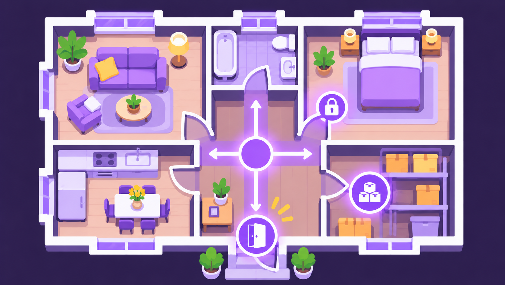
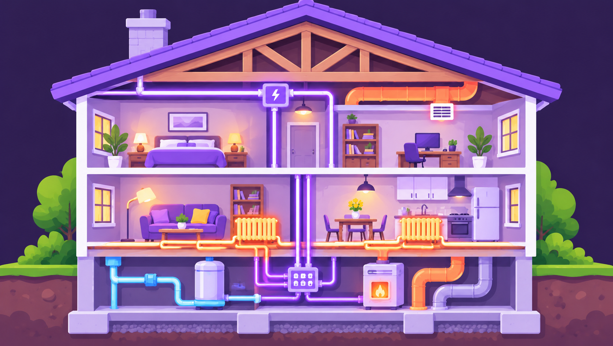
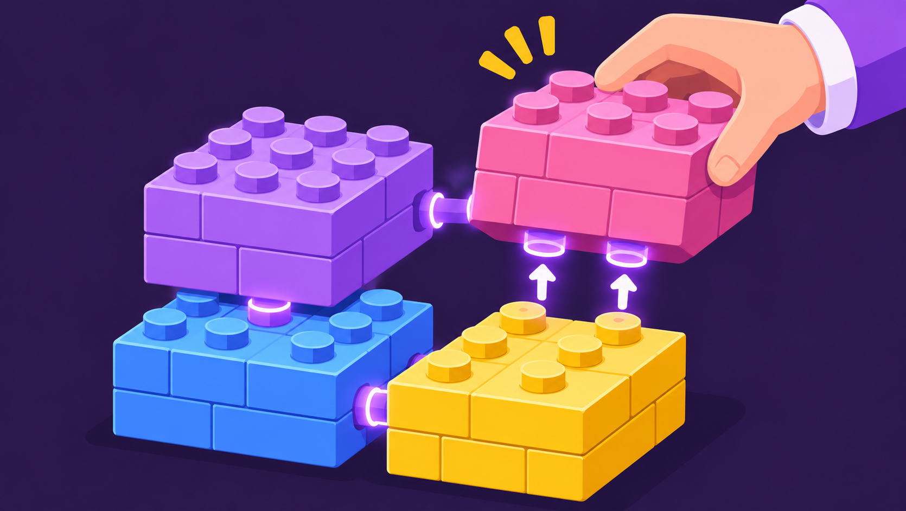
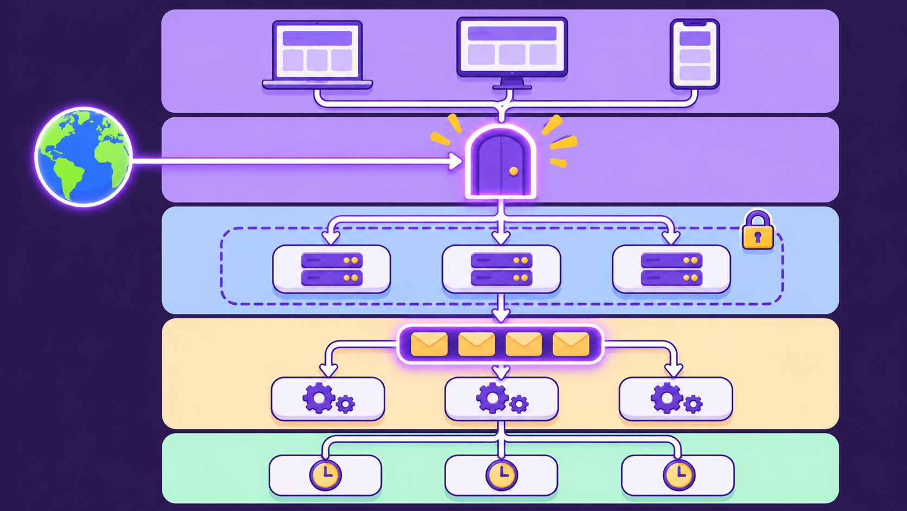
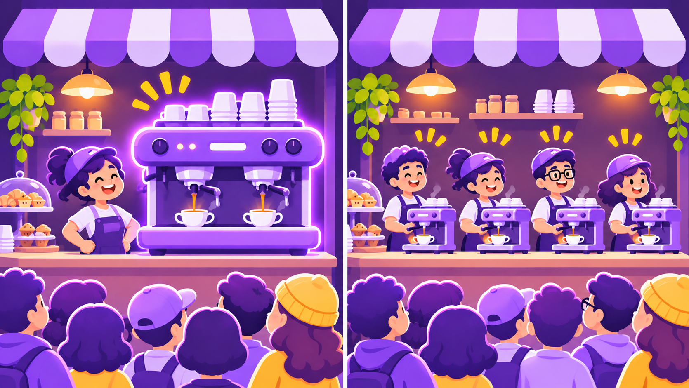
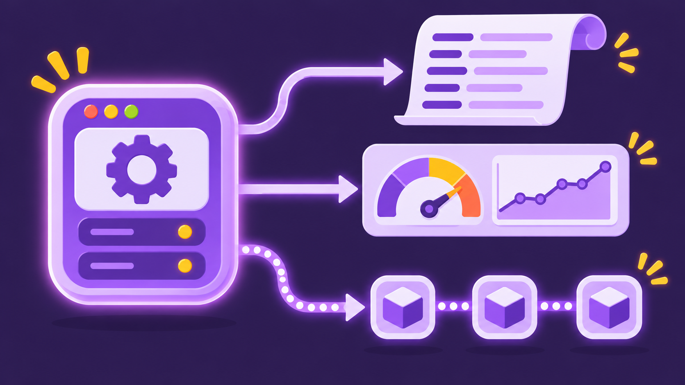

Design Backend Systems with Confidence
From writing code to designing systems


Your Roadmap from Code to Design
What · When · Architectures · How · Evolution

Check If You're Ready to Start
Who it's for, and what you need
What Is Backend Architecture Design?
Modularity, interfaces, and data flow


What Are Modules, Interfaces, and Data Flow?
Neighborhoods, roads, and traffic


What Does an Architecture Diagram Tell You?
Read a diagram in four steps


What Do You Gain by Designing First?
Save money, manage complexity, win support



What Is Modularity, and How Much Is Enough?
Not one big block, not fifty tiny pieces

What Is Separation of Concerns?
One clear job, one clear name

What Are Service Tiers?
Every service has its place


What Are the Main API Styles?
REST, gRPC, and events


What Happens When Every Team Talks Differently?
One standard, no adapters

What Are Shared Interfaces and Standard Libraries?
Solve it once, use it everywhere


What Is Scalability?
Bigger machines, more machines, no bottlenecks


What Is Robustness?
Fail small, recover fast


What Is Flexibility?
Make room for the next feature
What Is Observability?
See inside, skip the noise

